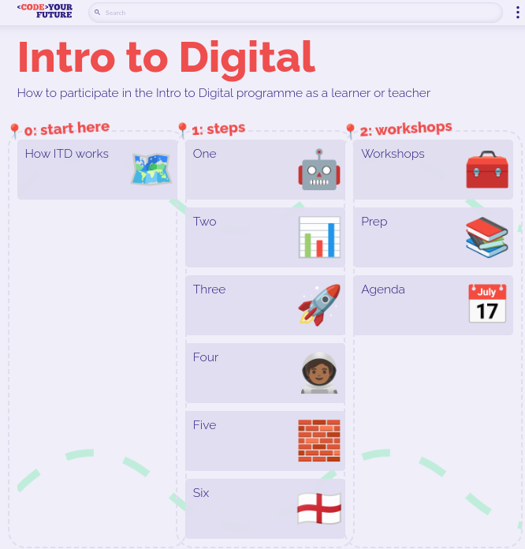
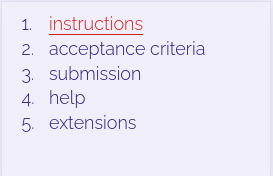
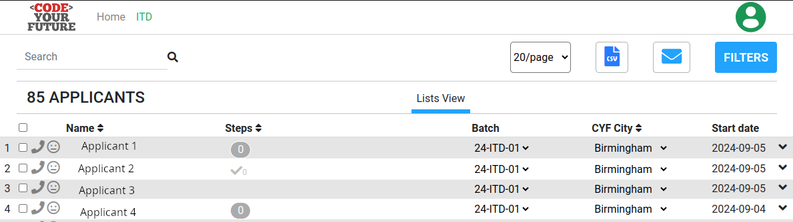
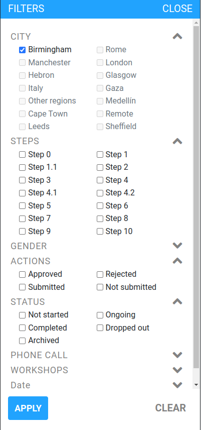
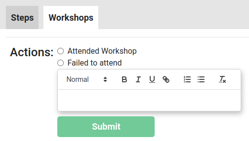

The information you will find here is the information I found useful as a volunteer helping with the Introduction to Digital programme.
The Introduction to Digital course is known as ITD. You can find an overview of how ITD works here https://cyf-itd.netlify.app/how-itd-works/
The role of volunteers is to review submissions by applicants and respond with feedback. The submissions will be found on the Dashboard. See below for the instructions on how to access the dashboard.
The Slack channel #cyf-intro-to-digital-course is for volunteers to discuss and ask questions, for example if you have questions about reviewing applicants work. This channel has a canvas containing important information https://codeyourfuture.slack.com/canvas/C01332PNRTN. You should read the canvas first. This document contains additional information to help you find your way around as a volunteer.
As a volunteer you should:
You will need a computer or tablet with this software installed:
CYF generally uses (Ubuntu) Linux rather than Windows or Macs. If you are trying to complete tasks that the applicants will do, instructions generally assume a Linux environment, so some experience of Linux would be helpful.
On the following pages we will take you through all the necessary information on volunteering with ITD guide your feedback to applicants.
Before you can review the work submitted by applicants, you should familiarise yourself with the syllabus.
The syllabus for ITD is here: https://cyf-itd.netlify.app/. This is a screenshot of the syllabus home page:

Applicants will work through the steps week by week. Each step contains instructions for the applicants to do complete a task which they should then submit. Volunteers can find these submissions on the dashboard and give feedback. There is a page which just contains the steps in order and that is here: https://cyf-itd.netlify.app/steps/. The Workshops will be organised by each region, and are designed to be face-to-face opportunities for applicants to ask questions and clarify their learning. Workshops will be advertised on Eventbrite and advertised in slack.
You will find that each step has a number of sub-components reachable via a menu which looks like this:
.
These instructions come from Step 4 in the #cyf-intro-to-digital-course canvas (https://codeyourfuture.slack.com/canvas/C01332PNRTN so please refer to that first as it contains links to the instructions your should follow to access the dashboard. The information below is just designed to summarise those instructions..
Important: If you already completed this form in some point please click here.This takes you to a page where you enter your email address and you will then get sent an email to confirm your login and thereafter you will be able to access the dashboard directly. If you have problems, post a question into the slack channel
#cyf-intro-to-digital-courseIf you click on See Applicants in the New Applicants box, you will see a list of all the new applicants.

The blue Email button allows you to email applicants.
In my screen I can download a CSV file containing the details of the applicants, but you may not have this option.
You can use the FILTERS button to filter the view and see applicants in different areas, or limit the steps displayed. This screenshot shows some of the filter options:

If you click on Review Steps in the Steps box you will see a list of those applicants who have submitted work for one or more of the steps in the ITD syllabus. The view is a subset of all the applicants and looks similar:
* You can see that Applicant 1 has submitted work for Step 0 but it hasn't yet been approved. That is indicated by the 0 in the Steps column.
* Applicant 2 has also submitted work for Step 0 and it has been approved because there is a tick AND a 0 in the Steps column.
When reviewing a submission there are three things you can do:
If you click the Workshops option under a applicant's name, you are able to record whether or not they attended a workshop and leave some text as context. Here is what the option looks like:

Here is a quick list of useful links (some are for applicants only, but it is helpful to know them if an applicant has a problem):